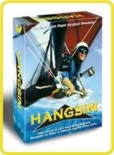

Hangsim
von Wilco Publishing
getestet von André Niedhöfer
"Der Vogel ist eine Konstruktion, die auf der Grundlage
mathematischer Gesetze arbeitet. Es liegt in der Macht des Menschen, eine
Konstruktion zu entwerfen, die diese Eigenschaften besitzt." Diese
Aussage von da Vinci wurde mit der Entwicklung der Ultraleichtfluggeräte
bewahrheitet. Und diesen Satz nahm sich Wilco zu Herzen, um eine neue Art
Flugsimulation zu entwickeln. Hangsim ist der erste Flusi, der sich
ausschließlich mit dem Fliegen von Drachen, Gleitschirmen,
Segelflugzeugen etc. beschäftigt. Ich habe mir diese Sache mal genauer
angeschaut.
Hat einem der Postbote das Paket vorbeigebracht und die hübsch
gestaltete Verpackung erst einmal aufgerissen, so findet man neben der
Programm-CD ein Handbuch und natürlich den obligatorischen Werbeprospekt
von Ubisoft, dem deutschen Vertreiber der Wilco-Produkte. Ich habe die
deutsche Version getestet, soll heißen deutsches Handbuch aber englisches
Programm. Wann oder ob überhaupt eine komplett deutschsprachige
Programmversion herauskommt, dazu macht Wilco Publishing keine Angaben.
Also CD rausgenommen und Laufwerk damit gefüttert. Daraufhin öffnet sich
das Installationsfenster.
 Installation
Installation
Die Installation des Programms ist unkompliziert und einfach
gestrickt. Dabei muss der CD-Key eingegeben werden, der sich auf der
CD-Hülle befindet. Das Kopieren der Dateien auf Festplatte dauert aber
etwas lange (190MB). Dafür wird aber nachher beim Programmstart keine CD
mehr benötigt und das lästige CD-Wechseln entfällt.
Handbuch
Das Handbuch bietet alle wichtigen Informationen zum Programm und dies
in einem recht großen Umfang. Alle Flugoptionen werden erklärt und an
Abbildungen wurde auch nicht gespart. Weiterhin wurde an die Wetterkunde
und Einführung in die Flugdynamik der Gleiter gedacht, die ebenfalls sehr
umfangreich ist und auch den unerfahrenen Piloten einen Einblick in die
windgestützte Fliegerei gibt. Dafür ein großes Lob an Wilco.
 Fluggeräte
Fluggeräte
Der Pilot hat insgesamt sieben Fluggeräte zur Auswahl. Dazu gehören
drei Drachen (einer ist motorisiert), zwei Gleitschirme (einer mit
Rucksackmotor), ein Segelflugzeug sowie ein motorisierter
Ultraleichflieger. Alle sind sehr detailliert dargestellt. Zum Beispiel
erkennt man den Details der Motoren oder die Feinstruktur der bespannten
Flügelflächen. Da haben sich die Programmierer wirklich Mühe gegeben
Ebenso haben alle Flieger Piloten an Bord. Diese sehen zuweilen etwas
komisch aus, eher nach Lego-Technic-Figuren (aber das ist ja eher
nebensächlich), sind aber zum Teil - beim Drachenflieger und Paraglider -
animiert. Dies aber auch nicht vollständig, denn sie bewegen ihren
Körper nur, wenn das Fluggerät steigen oder sinken soll. Beim Start
rennen die Piloten, um genug Geschwindigkeit zu bekommen. Die dabei
auftretenden Bewegungsabläufe sind sehr gut animiert.
Was mir an den Fliegern fehlt, sind eindeutig die animierten
Steuerflächen und Propellerblätter. Ich persönlich finde es ziemlich
frustrierend, wenn sich z.B. der Pilot des Paragliders den Steuerbefehlen
entsprechen bewegt, die Ruder des Seglers sich aber nicht einmal rühren.
Das gleiche trifft auf die Propeller der motorisierten Versionen zu. Ich
verstehe es nicht ganz, wie man soviel wert auf Detailtreue legt, dann
aber die Animierung der wichtigsten Flugprozesse nicht umsetzt.
Einen dicken Punkt bekommt Hangsim für die bestechende Flugdynamik. So
reagieren die Fluggeräte genau auf die bestehenden Wetterverhältnisse
und auf das jeweilige Relief (z.B. am Hang und im Tal), kein Wunder,
wurden sie doch laut Pressetext von einer Vielzahl echter Gleiterpiloten
getestet. Positiv fiel mir zum Beispiel auf, das sich der motorisierte
Paraglider nach der Beschleunigungsphase erst einmal einpendeln muss.
 Apropos Beschleunigung: Meiner Meinung nach beschleunigen die
motorisierten Varianten viel zu stark für ihren Motor. Weiterhin finde
ich es schade, das keine Beschädigungsstruktur hinzugefügt wurde. Zwar
wird ab einer gewissen g-Kraft die Anzeige eingeblendet, der Gleiter wäre
auseinandergebrochen und stürzt ab, was auch in der Realität durchaus
passieren kann, doch unten am Boden sieht man keinerlei Schäden. Ebenso
versinkt der Gleiter öfters im Szenerieboden (vielleicht bestehen sie ja
auch aus Matsch?!)
Apropos Beschleunigung: Meiner Meinung nach beschleunigen die
motorisierten Varianten viel zu stark für ihren Motor. Weiterhin finde
ich es schade, das keine Beschädigungsstruktur hinzugefügt wurde. Zwar
wird ab einer gewissen g-Kraft die Anzeige eingeblendet, der Gleiter wäre
auseinandergebrochen und stürzt ab, was auch in der Realität durchaus
passieren kann, doch unten am Boden sieht man keinerlei Schäden. Ebenso
versinkt der Gleiter öfters im Szenerieboden (vielleicht bestehen sie ja
auch aus Matsch?!)
Letztendlich kann man sagen, dass die Fluggeräte erfreulich detailliert
daherkommen, mit bestechender Flugdynamik. Doch Punkte wurden durch
fehlende Animationen und Umsetzungsfehler vergeben.
 Cockpits und Instrumente
Cockpits und Instrumente
Hangsim bietet ein virtuelles Cockpit an, welches aber mehr auf den
Rundumblick ausgelegt ist, und nicht unbedingt als fein detailliertes
Instrumentenachbildung gedacht ist. Diese funktionieren im Cockpit sowieso
nicht. Für das Ablesen der Fluginformationen müssen daher einheitliche
Instrumente (Variometer, Höhenmesser, Geschwindigkeitsanzeige und
Drehzahlmesser) eingeblendet werden. Auch an ein GPS-System wurde gedacht,
welches auch für die Anzeige der Waypoints eingesetzt wird. Zusätzlich
lassen sich alle Informationen durch ein Head-Up-Display (HUD) abrufen,
was aber eher unrealistisch ist.
 Szenerien
Szenerien
Über die Darstellung der Umgebung lässt sich streiten. Einerseits
sind sie wahnsinnig schön anzuschauen. Andererseits werden sie aufgrund
ihrer geringen Fläche schnell langweilig. Insgesamt stehen sieben relativ
kleine Areale zur Auswahl, die aufgrund ihrer meteorologischen und
geographischen Besonderheiten jeden Aspekt des windgestützten Fliegens
bedienen. 'Mountain' repräsentiert dabei die Bergregion von Chamonix, in
'Gorges' sind die Schluchten von Verdon umgesetzt und 'Valley' bildet die
Vulkanregion um Puys (alle Frankreich) ab. Weiterhin setzt Metro das
Gebiet Orange County östlich von LA um. 'Ridge', 'Beach' und 'City' bilden ein
größeres Fluggebiet und beinhalten den Küstenstreifen von Torrey Pine,
Del Mar und einen Teil der Stadt San Diego in Kalifornien. Insgesamt ist
die Größe der gesamten Gebiete vergleichbar mit dem, welches in Flight
Unlimited II abgeflogen werden kann.
 Besonders aus etwas größerer Flughöhe offenbart sich die hervorragende
Qualität der photorealen Gebiete. Dies ist auch kein Wunder, denn es
wurden Satellitenaufnahmen genommen, die dann überarbeitet wurden
(32bit). So kommt auch die extreme Auflösung von bis zu 3 Metern pro
Pixel zustande.
Besonders aus etwas größerer Flughöhe offenbart sich die hervorragende
Qualität der photorealen Gebiete. Dies ist auch kein Wunder, denn es
wurden Satellitenaufnahmen genommen, die dann überarbeitet wurden
(32bit). So kommt auch die extreme Auflösung von bis zu 3 Metern pro
Pixel zustande.
 Es sind jedoch kaum Gebäude wahrzunehmen, und wenn, dann sind sie nicht
besonders schön texturiert. Den einzigen Lichtblick bietet da die
angedeutete Skyline von San Diego. Auch die Bäume und Palmen sehen aus
wie einfache Pappaufsteller. Durch das Fehlen dieser Gebäude- und
Landschaftsstrukturen, die ja auch für den Gleiter einen Reiz ausüben
(ich denke da z.B. an das Drachenfliegen durch enge Häuserschluchten),
wird die Fliegerei mit Hangsim früher oder später langweilig. Es gibt
einfach nichts zu entdecken außer hier und da ein paar Bauwerke. Wie
gesagt sind sie zudem viel zu klein, als das stundenlanges Umherschwirren
mit dem Gleiter aufregend wäre. Gelangt man an das Ende einer solchen
Szenerie bietet sich ein grauenhafter Anblick, denn es ist Szenerieblock
an Szenerieblock gereiht (siehe Bild). Diese Aussicht hatten ja vielleicht
auch die alten Seefahrer, als sie an den Rand der Welt gelangten, und
Wilco wollte dieses Feeling auch dem Simmer gönnen :-).
Es sind jedoch kaum Gebäude wahrzunehmen, und wenn, dann sind sie nicht
besonders schön texturiert. Den einzigen Lichtblick bietet da die
angedeutete Skyline von San Diego. Auch die Bäume und Palmen sehen aus
wie einfache Pappaufsteller. Durch das Fehlen dieser Gebäude- und
Landschaftsstrukturen, die ja auch für den Gleiter einen Reiz ausüben
(ich denke da z.B. an das Drachenfliegen durch enge Häuserschluchten),
wird die Fliegerei mit Hangsim früher oder später langweilig. Es gibt
einfach nichts zu entdecken außer hier und da ein paar Bauwerke. Wie
gesagt sind sie zudem viel zu klein, als das stundenlanges Umherschwirren
mit dem Gleiter aufregend wäre. Gelangt man an das Ende einer solchen
Szenerie bietet sich ein grauenhafter Anblick, denn es ist Szenerieblock
an Szenerieblock gereiht (siehe Bild). Diese Aussicht hatten ja vielleicht
auch die alten Seefahrer, als sie an den Rand der Welt gelangten, und
Wilco wollte dieses Feeling auch dem Simmer gönnen :-).
 Sicherlich bieten die Szenerien was fürs Auge (wenn man im auch im Gebiet
bleibt), doch irgendwann wird es wirklich langweilig., sich ständig in
begrenzten Arealen aufzuhalten. Da helfen auch die anderen Flugmodi nicht.
Sicherlich bieten die Szenerien was fürs Auge (wenn man im auch im Gebiet
bleibt), doch irgendwann wird es wirklich langweilig., sich ständig in
begrenzten Arealen aufzuhalten. Da helfen auch die anderen Flugmodi nicht.
Eine weitere Besonderheit ist die dynamische Szenerie. Das heißt, man
kann acht weitere Fluggeräte in die Szenerie einfügen, die dann
computergeneriert fliegen. Man hat dabei verschieden Möglichkeiten. So
kann man den Mitflieger so einstellen, dass er einfach nur Kreise oder
geradeaus fliegt, oder das er z.B. Thermiken und Hangwinde findet. Hat man
so zum Beispiel letztere Einstellung ausgewählt, kann man den
Computerpiloten folgen, und so erlernen, wo diese speziellen Winde zu
finden sind. Die künstliche Intelligenz ist dabei sehr gut umgesetzt.
 Wetter
Wetter
Und auch hier haben die Programmierer von Hangsim hart gearbeitet, und
das Ergebnis kann sich durchaus sehen lassen. Als Hangsimmer hat man die
Möglichkeit, nahezu alle Wetterverhältnisse zu erstellen (außer Regen
und Schnee, aber da fliegt man als UL-Pilot ja sowieso nicht). So lässt
sich Windstärke, Windrichtung, Wolkendichte und deren Ober- und
Untergrenze einstellen. Weiterhin kann man die Häufigkeit der Aufwinde,
deren Höhe sowie Stärke auswählen. Somit hat man fast unbegrenzten
Spielraum bei der Auswahl des Wetterbedingungen. Diese Einstellungen
werden natürlich im Programm selber exakt wiedergegeben. So sind z.B.
Hangwinde auch an Hängen zu finden, und die Aufwinde befinden sich
zumeist unter Wolken. Leider sehen die Wolken an sich nicht so gut aus.
Man kann auch nicht aus mehreren Wolkentypen auswählen. Die Darstellung
der Sonne ist gelungen, man hat auch den Anschein einer Blendung, wenn man
ihr entgegenfliegt. Zusätzlich spiegelt sie sich in größeren Gebäuden.
 Ein besonderes Schmankerl haben die Anfänger zur Auswahl. Es lassen sich
Thermiken als sich drehende Säulen darstellen, die man schon vom weitem
erkennt. Auch so kann man lernen, wo Aufwinde zu finden sind.
Ein besonderes Schmankerl haben die Anfänger zur Auswahl. Es lassen sich
Thermiken als sich drehende Säulen darstellen, die man schon vom weitem
erkennt. Auch so kann man lernen, wo Aufwinde zu finden sind.
Die vier Flugmodi
Der Hangsimmer hat insgesamt vier Flugmodi zur Auswahl. Diese sind je
nach Schwierigkeitsgrad nochmals unterteilt. Zum einen gibt es den 'Freeflight' als ganz normales Dahingleiten in den Szenerien. Es können
alle Gleiter und Szenerien ausgewählt werden. Auch das Wetter kann selbst
eingestellt werden.
Als zweites gibt es 'Challenge'. Dabei werden dem Piloten bestimmte
Situationen geboten, in denen er je nach Schwierigkeitsstufe mehr oder
weniger schwierige Bedingungen vorfindet. In diesem Flugmodus sind auch
die fünf Lernflüge versteckt. Ich meine, man hätte ruhig eine eigene
Option mit diesen Übungsflügen realisieren können. Auch hätte man mehr
dieser Lernflüge programmieren müssen, da dabei nur das Fliegen mit dem
Drachen berücksichtigt wurde .
Der dritte Flugmodus nennt sich 'Competition'. Dies ist der
Wettbewerbsmodus, das heißt man muss eine bestimmte Strecke, die durch
Wegpunkte gekennzeichnet ist, abfliegen. Dabei muss man berücksichtigen,
dass es nicht unbedingt darauf ankommt, als erster am Zielpunkt
anzukommen. Es werden nämlich Punkte auch auf die größte Flughöhe, die
zurückgelegten Flugkilometer, durchschnittliche Landegeschwindigkeit etc.
gegeben. Das bedeutet, das man selbst wenn man nur Vierter geworden ist,
trotzdem die höchste Punktzahl erreichen kann. Diese wird dann im eigenen
Logbuch gespeichert.
Der vierte Flugmodus heißt 'Fun'. Wie der Name schon sagt geht es hierbei
nicht unbedingt um das präzise Fliegen, sondern der Spaß steht im
Vordergrund. Dabei müssen die gegnerischen Piloten mit Raketen (!)
abgeschossen werden. Ziel ist zum Beispiel, eine bestimmte Strecke als
erster abzufliegen. Um zu gewinnen sollten dabei bestmöglich alle Gegner
abgeschossen werden. Es macht sicherlich erst einmal Spaß, mit Raketen
von einem Gleitschirm aus andere abzuschießen, aber nach ca. fünf
Minuten fragt man sich echt, ob dieser Modus hätte sein müssen. Es wird
echt langweilig, weil nichts großes passiert. Man sieht nichts
explodieren, die Waffen sind immer gleich und die Munition ist auch noch
unbegrenzt vorhanden. Die künstliche Intelligenz ist in dem Fall
schlecht, denn ich wurde bei keinem einzigen meiner Fun-Flights
angegriffen. Vielmehr hatte ich alle Gegner binnen weniger Minuten wenn
nicht sogar Sekunden ausgeschaltet.
Insgesamt muss man sagen, das alle vorgegebenen Flüge sehr einfach
nachzufliegen waren, vielleicht zu einfach. Die Aufgaben an sich sind
nicht schwierig, auch wenn man noch Anfänger in diesem Metier ist. Der
Nachteil daran ist, dass der Spielspass nach einer Weile auf der Strecke
bleibt.
Erstellung von Szenerien und Fluggeräten
Besonders hervorgehoben werden muss, dass Wilco an eine einfache
Möglichkeit zur Erweiterung von Hangsim mit eigenen Szenerien oder
Fliegern gedacht hat. Die Szenerien sind einfache Satellitenphotos, die
mit Hilfe von zwei Zusatzprogrammen (kostenlos auf www.hangsim.com) in
Szeneriedateien umgewandelt werden können. Die Fluggeräte bestehen aus
3D-Dateien die mit 3D-Studio erstellt und mit dem SDK DeveloperKit von
Microsoft konvertiert wurde. So gibt es schon jetzt drei ansehnliche
Zusatzszenerien und zwei neue Paraglider im Internet:
(http://space.tin.it/sport/snpmpv/hangsim/index.html).
 Fazit:
Fazit:
Wilco hat mit Hangsim einen Flugsimulator geschaffen, der ein völlig
anderes Gebiet der Fliegerei bedient als die üblichen Programme. Erstmals
sind alle Aspekte des Fliegens mit den Naturgewalten umgesetzt, und dies
in beeindruckender Qualität. Abzüge gibt es für die unbefriedigende
grafische Gestaltung der Fluggeräte sowie für die mageren und kleinen
Szenerien. Der Spielspaß bleibt wie gesagt irgendwann auf der Strecke.
Dort hätte man sehr viel schwierigere Aufgaben erstellen müssen, um auch
den Profi das Fliegen schwer zu machen. Nur gut, dass die Programmierer
die Schaffung von Add-Ons sehr einfach gestaltet haben.
Hangsim ist auf
jeden Fall etwas für virtuelle Piloten, die dieses Fluggenre näher
kennenlernen möchten, und schon immer den Wind herausfordern wollten. Das
Preis-Leistungs-Verhältnis ist dabei noch ausreichend. Mir jedenfalls hat
es schon Spaß gemacht, Hangsim zu benutzen. Wer einen Einblick in das
Programm haben will, sollte sich die Demo (allerdings satte 12MB!) auf
jeden Fall anschauen. Sie ist ebenfalls auf der offiziellen Website
erhältlich.
André Niedhöfer
haupt-niedhoefer@t-online.de
11.Januar 2000


{kind=link}